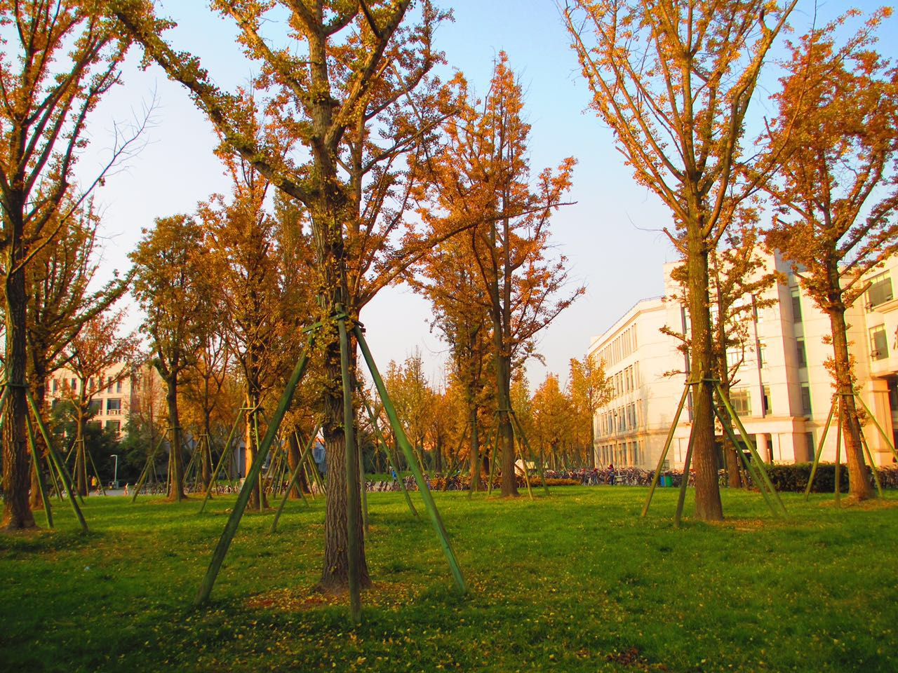
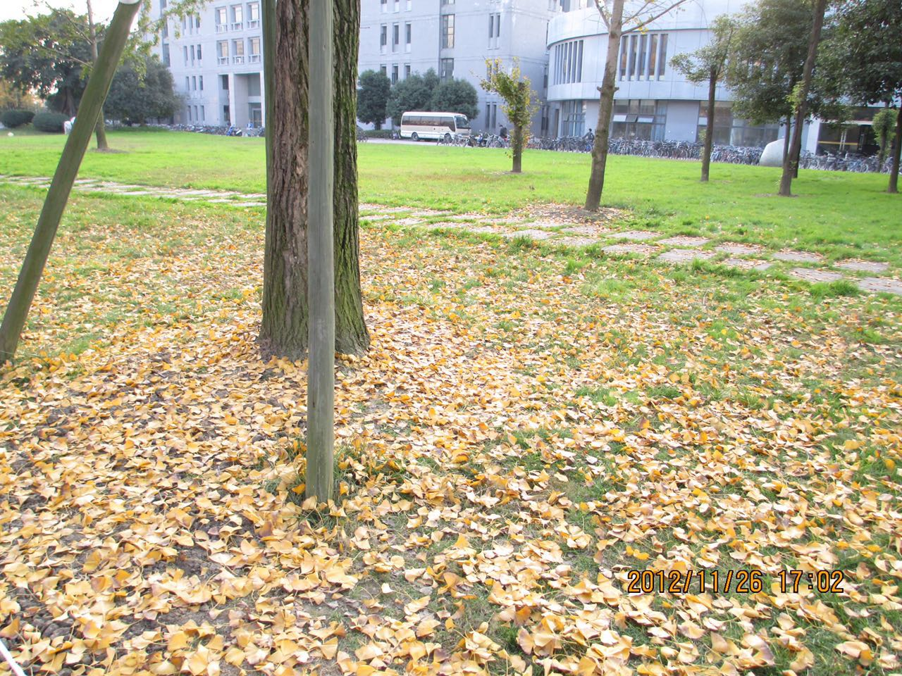

Ginkgo
Home
Some features about Ginkgo
Basic features:
- Leaves will become yellow in the fall.
- Can live up to 1500 years old.
- Fruit can be used as medicine.
- This knid of specie can date back to 270 million years ago.

The leaf of ginkgo:
- The structure of the leaf is like a small fan.
- The color of the leaf is ondine, and when fall comes, it gradually becomes deeper into yellow.
